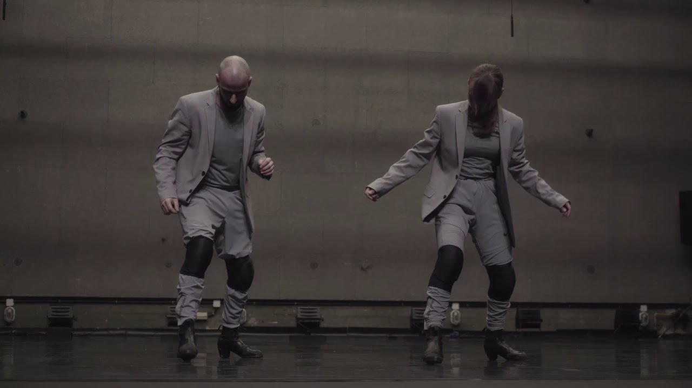

C:/ADRIAN_VEGA/MOVEMENT_SELECTION
Adrian Vega
Choreographer, performer and visual artist working across post Hip Hop, contemporary dance, flamenco footwork, sound and moving image.
Adrian Vega is a choreographer, performer and visual artist trained at the Institut del Teatre in Barcelona. His movement practice brings together Hip Hop, contemporary dance and flamenco through rhythmic articulation, floor techniques, inversion and instant composition. He approaches the body as an archive of rhythms, gestures and cultural crossings.
His work moves between performance, installation, sound and moving image. As a performer, he is drawn to precise coordination, physical dialogue and the way a group can build a shared pulse through attention. His current practice develops from a post Hip Hop perspective, connecting footwork, acoustic presence, partnering and audiovisual thinking.
/ARCHIVE/MOVEMENT_FILES
Works
A compact selection across duets, solo practice and footwork research. Each file appears once.
/CV/SELECTED_TRAJECTORY
Trajectory
Own work
We Are Just Okey (2020/21), Titulo Provisional (2021), Los Lunares del Puma (2022), EkXina (2023), Garabatos (2023), Inaudit (2024), Digital Bodies: Echo & Delay (2025) and Sampling (current research).
2023 CLT019 Research and Innovation Grant for EkXina
2022 CLT019 Research and Innovation Grant for Los Lunares del Puma
Co-founder and collaborator
Co-artistic director, dramaturg, spokesperson and performer in Sinestesia, Nur, Kintsugi, No Sin Mis Huesos and Un Ultimo Recuerdo.
Selected international performances
- Breakin' ConventionLondon
- Summer Dance ForeverAmsterdam
- SummerStageNew York
- Hip Hop InternationalSan Francisco
2018 First Prize, Kintsugi, Snap Festival
2017 First Prize, Kintsugi, Burgos New York
2014 First Prize, Sinestesia, Burgos New York
2014 Audience Award, Sinestesia, 10 Sentidos
2013 First Prize, Sinestesia, Hop Festival
2013 Audience Award, Sinestesia, Dance and Theater Fair of Huesca
2013 Audience Award, Sinestesia, Estrena't
Collaborator
Assistant director, dancer and video artist for Jazzbetween.live and Re.titled, awarded first prize at the Sabadell Choreographic Competition.
Collaborator
Performer and video artist in Doce and Postablao. Doce received Best National Creation at the Catalan Critics Awards.
Collaborator
Dancer in Handle With Care, first prize at the Institut del Teatre choreographic competition.
Guest teacher
Guest teacher at the Professional Dance Conservatory of Barcelona, sharing movement, composition and hybrid dance practices.